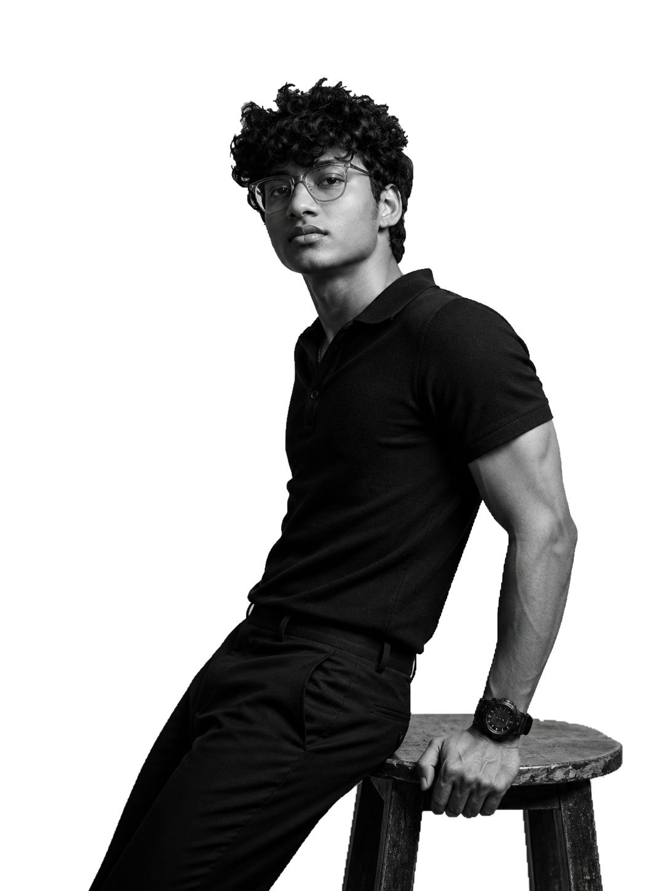
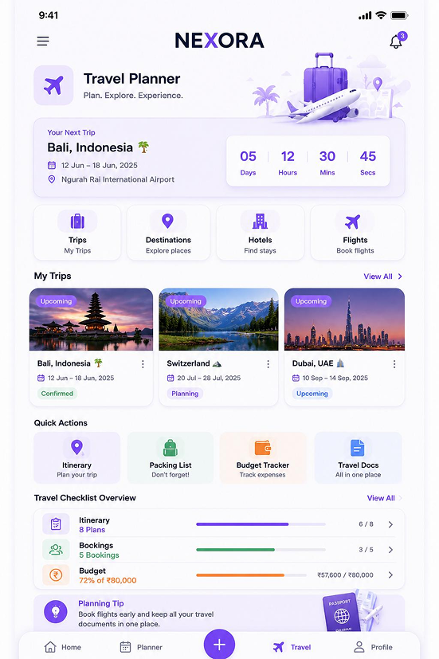
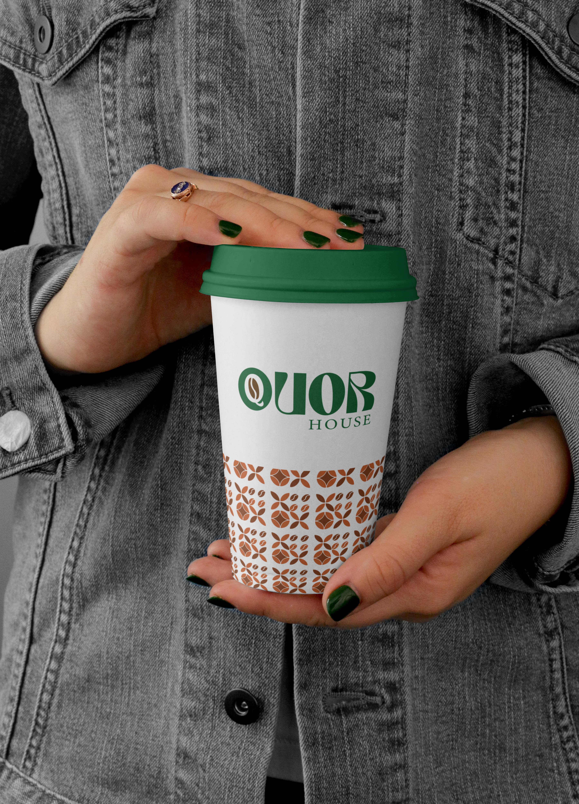
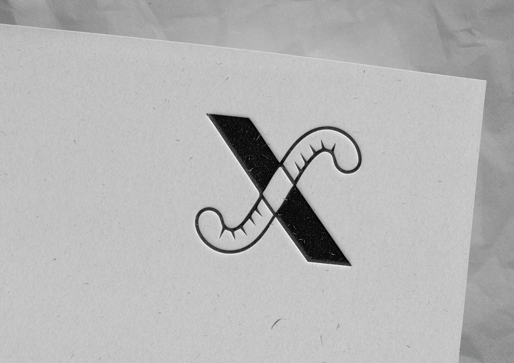

Nanora
UI/UX Design · Concept Project
A two-sided childcare marketplace connecting families with vetted caregivers, designed around trust, clarity, and meaningful care experiences.
View case study →
UI/UX DESIGNER & GRAPHIC DESIGNER
With a background in graphic design and a growing focus on UI/UX, I bring visual clarity and curiosity to the process of designing meaningful digital products.
A selection of my design work, exploring visual communication, user experience, and thoughtful digital interfaces.
UI/UX Design · Concept Project
A two-sided childcare marketplace connecting families with vetted caregivers, designed around trust, clarity, and meaningful care experiences.
View case study →
UI/UX Design · Group Project
An all-in-one planning ecosystem for tasks, habits, schedules, and travel, featuring user research, personas, and high-fidelity mobile UI.
View case study →Brand Identity · Graphic Design
A premium luxury footwear brand identity featuring a gold monogram, refined typography, packaging design, and complete brand guidelines.
View case study →
Brand Identity · Packaging Design
A 360-degree brand identity for an artisanal coffee roastery, including logo, stationery, packaging, merchandise, signage, and app icon design.
View case study →
Logo Design · Visual Identity
A conceptual logo combining a sewing needle, thread, and scissors into a clever negative-space monogram for a bespoke upholstery studio.
View case study →
Logo Design · Graphic Design
A minimalist monogram where a tailor's measuring tape forms the letter, rendered as a tactile letterpress emboss on textured craft paper.
View case study →FEATURED PROJECT
Explore the Nanora project — a childcare marketplace concept where I applied UX research, information architecture, and visual design to create a trust-centered platform for families and caregivers.
Explore project →My background in graphic design shapes how I approach typography, composition, and visual consistency. As I grow in UI/UX, I am building on that foundation with user research, structured problem-solving, and thoughtful interface design.
Learn about user needs, goals, and challenges before exploring potential solutions.
Organize information, user flows, and interface elements into clear, intuitive experiences.
Combine visual hierarchy, typography, and interface patterns to create cohesive digital experiences.
Junaix · Bangalore, Karnataka
Course Connect · Bangalore, Karnataka
Currently building skills in user research, wireframing, and front-end development
University of Calicut · Chetana College of Media and Performing Arts
Foundational skills — currently learning
Explore my experience, skills, and design background in my resume.
A trained eye for typography, layout, and composition, developed through years of graphic design work.
Growing expertise in user research, personas, and journey mapping to ensure designs serve real needs.
Experience maintaining cohesive visual systems across digital and print touchpoints.
Actively expanding skills in UI/UX design, front-end development, and design thinking methodologies.
Have a project in mind, need a designer, or want to collaborate? I'd love to hear from you.